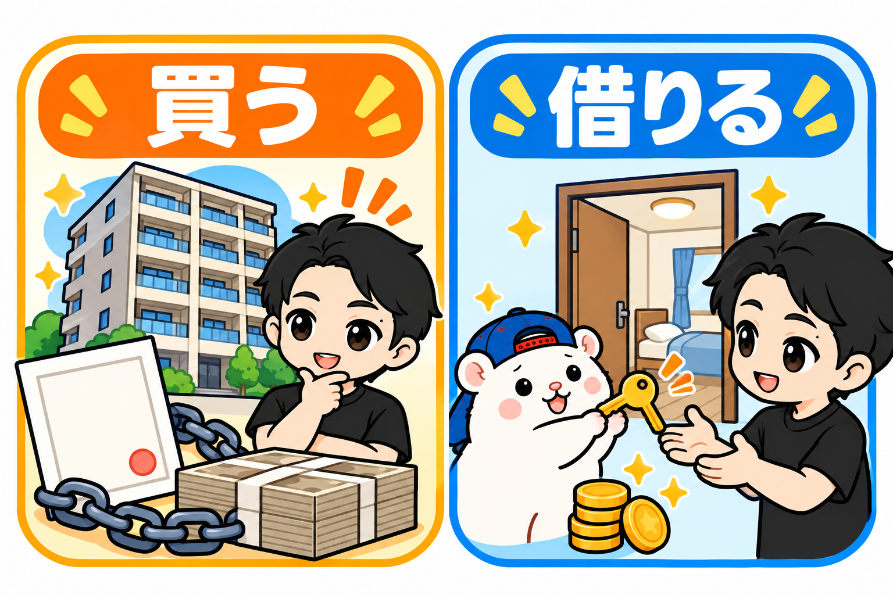
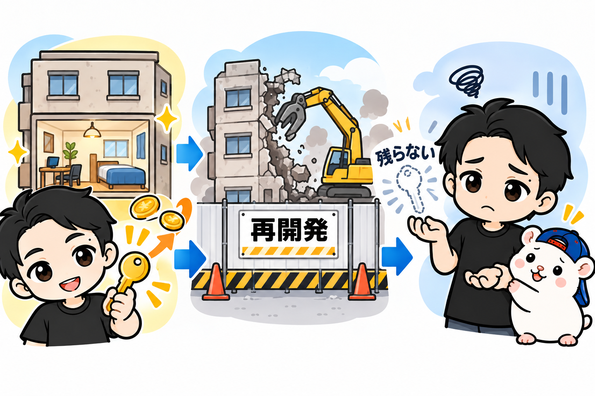
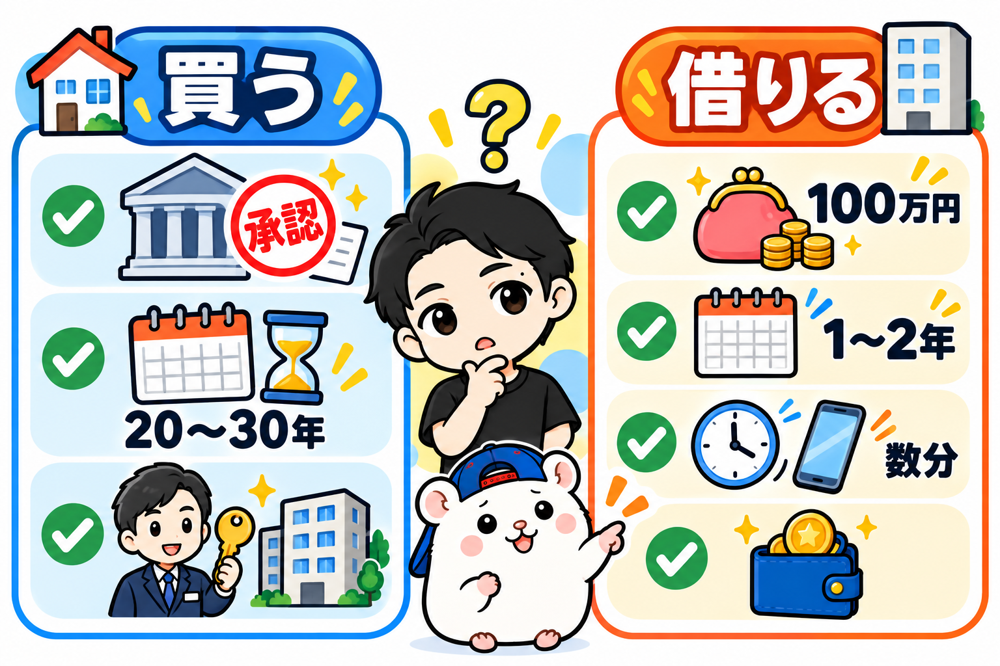

不動産で副業をしたい。
でも、融資は借りたくない。
そういう人に向けて書きます。
ぼくは37歳のとき、90万円でレンタルスペースを始めました。
融資はゼロ、貯金だけです。
7ヶ月で回収して、5年たったいまも毎月15万円ほど残っています。
これも、不動産の副業です。
ただし、買っていません。
借りて、貸しています。
マンションもアパートも、買ったことがありません
「副業 不動産」で検索すると、出てくるのはワンルーム投資やアパート経営の話ばかりです。
銀行から借りて、物件を買って、家賃をもらう。
ぼくは、これを一度もやったことがありません。
やっているのは、逆です。
家主さんから部屋を借りて、内装をして、1時間いくらで貸す。
ダンススタジオや会議室として使ってもらう、レンタルスペースという副業です。
5年で23部屋やって、売上は累計1.5億円ほどになりました。
その経験から、「買う不動産」と「借りる不動産」を、正直に比べます。
どちらが上、という話ではありません。
向き不向きの話です。
先に結論: 6つの軸で比べました

| 買う(マンション・アパート投資) | 借りる(レンタルスペース) | |
|---|---|---|
| 初期費用 | 数百万円〜(物件価格の1〜2割が自己資金の目安と言われます) | 27万〜214万円(ぼくの23部屋の実額) |
| 融資 | ほぼ前提 | いらない(1号店は貯金90万円) |
| 回収 | 年に数%の利回りが多いと言われます | 多くが1年前後(早い部屋で7ヶ月) |
| 手間 | 管理会社に任せれば少ない | 1日数分+清掃の外注 |
| 資産 | 土地・建物が残る | 何も残らない |
| 失敗したとき | ローンが残る | 家賃と原状回復で終わる |
上の3行は借りるほうが勝ち。
下の3行は、買うほうが勝ちです。
1つずつ書きます。
メリット① 融資がいりません
ぼくの1号店は、初期投資90万円でした。
床のクッションフロアも、鏡も、看板も、自分でやったからです。
23部屋ぜんぶの実額を見ても、いちばん安い部屋で27万円、いちばん高い部屋で214万円。
貯金で届く人が多い金額だと思います。
銀行の審査はありません。
年収も、勤め先も、勤続年数も聞かれません。
ぼくは会社員のまま、不動産サイトから物件に問い合わせて始めました。
買う不動産は、まず融資の審査から始まります。
審査に通る人と、通らない人がいる。
借りる不動産には、その入口がありません。
メリット② 回収が、桁ちがいに早い
利回りという言葉があります。
出したお金に対して、1年でいくら戻るか、という割合です。
ぼくの1号店は、90万円を出して、月15万円ほど残ります。
1年で180万円。
利回りでいうと、年200%です。
買う不動産の利回りは、年に数%が多いと言われます。
2,000万円の物件で年100万円なら、5%。
回収に20年かかる計算です。
ぼくの23部屋は、多くが1年前後で回収しています。
早い部屋で7ヶ月、遅い部屋で2年。
回収が終われば、そのあとは毎月の手残りが、そのまま利益です。
理由は単純で、出す金額が小さいからです。
物件を買わないぶん、動くお金が2桁ちがいます。
メリット③ 失敗しても、小さく終わります
23部屋のうち、6部屋は撤退しました。
騒音のクレームで1部屋、ビルの再開発で5部屋です。
撤退で払ったのは、残りの家賃と、部屋を元に戻す費用だけ。
ローンは残りません。
翌月から、その部屋のことは考えなくてよくなります。
買う不動産で空室が続いたら、ローンの返済は続きます。
売ろうとしても、買ったときの値段で売れるとは限らない。
失敗したときの傷の大きさが、まるでちがいます。
ここまでが、借りるほうの勝ち。
ここからは、負けです。
デメリット① 資産が、残りません

借りているだけなので、何も残りません。
ぼくは同じビルの5部屋を、再開発の取り壊しで失いました。
5部屋で月100万円の利益が出ていた部屋です。
家主さんの都合で、それが消えます。
買う不動産なら、建物が古くなっても土地は残ります。
売ればお金になるし、貸し続ければ家賃が入る。
税金の面でも、買うほうが有利な仕組みがあります。
「資産を持ちたい」なら、借りる不動産は向いていません。
ここは、はっきり負けています。
デメリット② 売上に天井があって、少しは働きます
レンタルスペースは、頑張っても売上が伸びません。
部屋は1つ、1日は24時間。
埋まったら、それ以上は増えないからです。
そして、ほったらかしではありません。
1店舗あたり1日数分、予約の確認とメッセージの返信があります。
清掃は週1回、1回1,000〜1,500円で外注しています。
買う不動産は、管理会社に任せれば、入居者がいるあいだは何もしなくていい。
「働きたくない」なら、買うほうが楽です。
デメリット③ 融資が使えないぶん、大きくするのが遅い
買う不動産のいちばんの武器は、他人のお金で始められることです。
自己資金300万円で、3,000万円の物件が持てる。
最初から大きく始められます。
借りる不動産は、そうはいきません。
ぼくは、回収した利益で次の部屋を出す、を繰り返しました。
1部屋目の90万円が戻ってきたら、2部屋目。
それで5年かけて、23部屋です。
正直に書くと、途中の店では融資も使いました。
ただ、それは部屋が増えて実績ができてからの話です。
最初の1部屋に、融資はいりませんでした。
向いている人、向いていない人

買う不動産が向いている人
□ 年収や勤め先で、融資の審査に通る
□ 20年、30年かけて資産を持ちたい
□ 自分では手を動かしたくない
借りる不動産が向いている人
□ 自己資金は100万円前後
□ 1〜2年で回収したい
□ 週に数分は動ける
□ 資産より、毎月の手残りがほしい
ぼくは、後者でした。
37歳・会社員・貯金90万円で、審査の列に並ぶ気になれなかった。
だから、借りました。
まとめ: 融資の審査を待つあいだに、1件問い合わせてみてください
不動産の副業は、買うだけではありません。
借りて貸す、という入口があります。
初期費用は27万〜214万円。
融資はいらない。
回収は1年前後。
そのかわり、資産は残らないし、売上には天井があります。
もし、いま融資の審査を待っているなら。
そのあいだに、不動産サイトで1件だけ問い合わせてみてください。
ぼくの1号店は、酔った勢いの問い合わせから始まりました。
▼レンタルスペースは儲からない? 23部屋・赤字ゼロのぼくが答えます
https://rental-space.net/articles/2026-08-23-rental-space-profit-truth.html
▼初期費用はいくら? 23部屋分の実額を公開
https://rental-space.net/articles/2026-08-25-rental-space-startup-cost.html
▼37歳のおっさんが、レンタルスペースをやってみた結果
https://rental-space.net/articles/2026-09-08-rental-space-at-37-results.html
▼はじめ方の全8ステップ
https://rental-space.net/articles/2026-09-15-rental-space-start-eight-steps.html
あなたの副業は、買う不動産ですか。借りる不動産ですか。
▼もう1つの副業、AI社員だけのeBay輸出店の実録🐹
https://note.com/cham_ebay
▼ブログ(レンスペ×eBay、全記事まとめ)
https://rental-space.net
23部屋の初期費用・手残り・回収の実額は、教科書にぜんぶ書いています。
レンタルスペース経営の教科書(公式サイト最安 ¥17,800)
https://rental-space.net/kyokasho/
※発売記念価格です。3部売れるごとに2,000円ずつ値上げします。